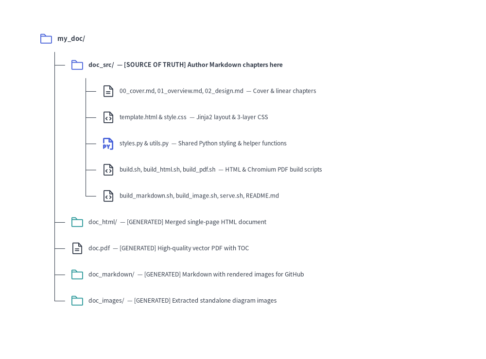

Linear Document Project Guide (drawlib init doc)
The doc starter template is designed for authoring linear technical documents — such as specifications, Request for Comments (RFCs), system architecture proposals, whitepapers, thesis papers, and formal engineering reports.
By unifying single-page specs and multi-chapter reports into a single archetype, Drawlib allows you to compile HTML, PDF, Markdown, and standalone images from the same Markdown source files.
1. Project Initialization
Scaffold a linear document project using drawlib init:
# Scaffold standard doc project in current directory (creates 'doc_src/'):
drawlib init doc
# With custom target name, theme, and language (creates 'my_report_src/'):
drawlib init doc my_report -s google -l en
2. Directory Layout & Anatomy

Source Code
from drawlib.canvas import save, setup
from drawlib.icons import phosphor
from drawlib.smartarts import TreeNode
from drawlib.styles import Styles
setup(width=100, height=74)
TreeNode.register_drawing_item(
name="folder",
location="before",
padding_width=3.8,
function=phosphor.folder,
style=Styles.PrimaryFlat,
args={"width": 2.8},
)
TreeNode.register_drawing_item(
name="folder_out",
location="before",
padding_width=3.8,
function=phosphor.folder,
style=Styles.Secondary,
args={"width": 2.8},
)
TreeNode.register_drawing_item(
name="md",
location="before",
padding_width=3.8,
function=phosphor.file_text,
style=Styles.Dark,
args={"width": 2.8},
)
TreeNode.register_drawing_item(
name="py",
location="before",
padding_width=3.8,
function=phosphor.file_py,
style=Styles.PrimaryBold,
args={"width": 2.8},
)
TreeNode.register_drawing_item(
name="code",
location="before",
padding_width=3.8,
function=phosphor.file_code,
style=Styles.Dark,
args={"width": 2.8},
)
root = TreeNode(
"my_doc/",
text_style=Styles.DarkBold.patch(text_size=9.5),
line_style=Styles.DarkThin,
line_horizontal_margin=3.2,
line_horizontal_length=3.2,
line_vertical_margin=5.4,
).set_drawing_item("folder")
src = root.add(
"doc_src/ — [SOURCE OF TRUTH] Author Markdown chapters here",
text_style=Styles.DarkBold.patch(text_size=9.0),
).set_drawing_item("folder")
src.add(
"00_cover.md, 01_overview.md, 02_design.md — Cover & linear chapters",
text_style=Styles.Dark.patch(text_size=8.5),
).set_drawing_item("md")
src.add(
"template.html & style.css — Jinja2 layout & 3-layer CSS",
text_style=Styles.Dark.patch(text_size=8.5),
).set_drawing_item("code")
src.add(
"styles.py & utils.py — Shared Python styling & helper functions",
text_style=Styles.Dark.patch(text_size=8.5),
).set_drawing_item("py")
src.add(
"build.sh, build_html.sh, build_pdf.sh — HTML & Chromium PDF build scripts",
text_style=Styles.Dark.patch(text_size=8.5),
).set_drawing_item("code")
src.add(
"build_markdown.sh, build_image.sh, serve.sh, README.md",
text_style=Styles.Dark.patch(text_size=8.5),
).set_drawing_item("code")
root.add(
"doc_html/ — [GENERATED] Merged single-page HTML document",
text_style=Styles.Dark.patch(text_size=8.8),
).set_drawing_item("folder_out")
root.add(
"doc.pdf — [GENERATED] High-quality vector PDF with TOC",
text_style=Styles.Dark.patch(text_size=8.8),
).set_drawing_item("md")
root.add(
"doc_markdown/ — [GENERATED] Markdown with rendered images for GitHub",
text_style=Styles.Dark.patch(text_size=8.8),
).set_drawing_item("folder_out")
root.add(
"doc_images/ — [GENERATED] Extracted standalone diagram images",
text_style=Styles.Dark.patch(text_size=8.8),
).set_drawing_item("folder_out")
root.draw(xy=(8, 66))
save()
3. Four Target Outputs from One Source
A doc project compiles into 4 distinct target artifacts:
| Output Target | Target Audience | Primary Use Case | Build Script |
|---|---|---|---|
doc_html/ |
Web Browsers | Fast local preview, web publishing, internal documentation wikis | build_html.sh |
doc.pdf |
Print & Distribution | Formal whitepapers, client deliverables, printable reports with Table of Contents | build_pdf.sh |
doc_markdown/ |
GitHub & Version Control | Direct viewing in GitHub/GitLab repositories with rendered image links | build_markdown.sh |
doc_images/ |
Presentations & Messaging | Drag-and-drop into Google Slides, Keynote, PowerPoint, Slack, or PRs | build_image.sh |
4. Chapter Ordering, Cover Page & Table of Contents Mechanics
Because a doc project does not use a navbar.md sidebar file, Drawlib merges all .md files in doc_src/ (excluding README.md) into a single linear document for both doc_html/index.html and doc.pdf:
- Lexicographical Chapter Sorting: Name your chapter files with numeric prefixes (
00_cover.md,01_overview.md,02_design.md,03_benchmarks.md) so they are merged in deterministic reading order. - Cover Page Convention (
00_cover.md): The first file in sorted order acts as the document cover page. When--toc(--generate-index) is passed todrawlib build pdf, the automated Table of Contents is inserted cleanly between the 1st document (00_cover.md) and the 2nd document (01_overview.md). - Chapter Page Breaks (
--page-break): By default in PDF compilation (--page-break), each merged.mdfile begins on a new A4 page (page-break-before: always). Pass--no-page-breakif you prefer continuous flow without forced page breaks between files.
5. Modular Build Scripts Architecture
Each project contains specialized scripts alongside a master orchestrator:
build_html.sh: Compiles and merges Markdown chapters into a standalone HTML document (doc_html/index.html). Extremely fast for local verification.build_pdf.sh: Renders the merged document into an A4 vector PDF via headless Chromium (page.pdf()). Supports automatic Table of Contents (--toc) and clean chapter page breaks (--page-break).build_markdown.sh: Converts inlinedrawlibblocks into standard Markdown image tags pointing to rendered diagrams indoc_markdown/<chapter>_images/.build_image.sh: Scans all Markdown files, extracts embeddeddrawlibblocks, and renders them cleanly intodoc_images/<chapter>_images/without risk of name collisions.build.sh(Master Script): Runs all of the above target builds in sequence to produce a complete set of release artifacts.
6. Direct CLI Commands
You can also run the build commands directly from the terminal:
# 1. Compile to HTML:
drawlib build html doc_src/ -o doc_html/
# 2. Compile to PDF with Cover and Table of Contents:
drawlib build pdf doc_src/ -o doc.pdf --toc --page-break
# 3. Compile to GitHub-ready Markdown:
drawlib build markdown doc_src/ -o doc_markdown/
# 4. Extract diagram images from Markdown:
drawlib build image doc_src/ -o doc_images/